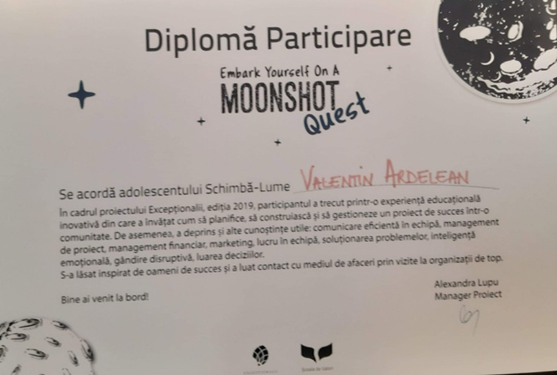

• Event Organizer
Organized and managed, coordinating logistics, marketing, and communication. Successfully increased participation and engagement.
• Volunteer Mentor
Mentored younger students, assisting them in self developing. Guided them in academic progress and personal development.
• Volunteer at Embark Yourself on a Moonshot quest
I have acquired useful knowledge in: effective communication in teams, project management, financial management, marketing, teamwork, problem-solving, emotional intelligence, disruptive thinking, and decision-making.
